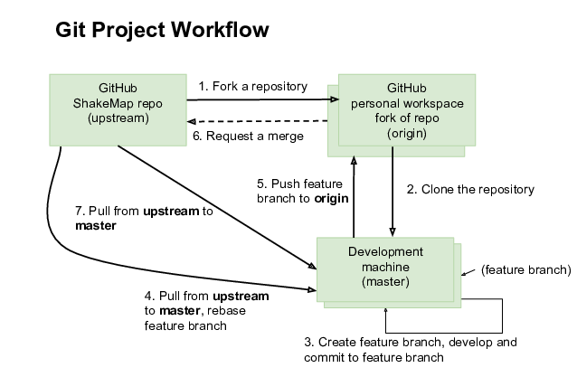

Guidelines for Contributors¶
We encourage contributions to the ShakeMap project. Before you begin, however, we recommend you contact us (either directly or, preferrably, through the issues feature on GitHub) to discuss your plans so that we can try to coordinate activities among contributors and ourselves.
See our LICENSE.md file for details of ShakeMap licensing. Any contributions will fall under the terms of that license, and by submitting a pull request you are agreeing to place your code under our license. In particular, it is a public domain license, which means you effectively give up all rights to your contributions, including to someone who uses or sells the code commercially.
Unit tests are required for all contributed code, and must provide significant coverage (>90%). All existing tests must pass or the PR will be rejected.
Documentation is also required. In addition to being well-commented, make sure your code has Google-style docstrings describe functions and all inputs, outputs, and possible exceptions raised. See the section “Coding Style” below for more.
There is a program, makedocs.py at the top level of the repository. It will rebuild the documentation. It will also change or create many files. Make sure to run the program (and review the documentation) before submitting your pull request.
See below for details on:
Coding style
Development workflow
Coremods
Coding Style¶
We now use the Black Code Formatter for all code formatting. You will be expected to run your code through Black before submitting it to us. There are Black extensions for emacs, vim, VSCode, etc. Or you can just run it standalone after you’re done editing.
In general, Black follows the PEP-8 style guide. So it’s good to follow that to start with.
Other things to keep in mind:
General
Document everything with docstrings.
Comment heavily with useful comments. Useful comments don’t say what you are doing, they say why you are doing it:
# Loop over xis a useless comment,# Update the elements of x with our newly-derived coefficientsat least tells us something.If your changes are extensive or you are adding a significant module, talk to us about adding additional documentation to this manual.
All printed, logged, exception, or otherwise formatted strings are now expected to be f-strings. If you don’t want to write f-strings, you can always run flynt on your finished code to convert. Just remember to run Black afterwards in case flynt breaks any rules.
Names
Program names should be:
Lowercase, underscored when necessary
Without .py suffix (
model, notmodel.py)Verbs (
model, notmodeler)
Package names should be:
lowercased, underscored when necessary
nouns
reasonably descriptive
Module names should be:
Lowercased, underscored when necessary
Nouns
Reasonably descriptive
Class names should be:
Camel-cased, starting with uppercase character (
MapCalculator)Nouns
Instance method names should be:
Camel-cased, starting with lowercase character [calcRxDistance()] (Unless superclass uses another style. In that case, follow the superclass style.)
Verbs
Reasonably descriptive (
calcDistanceis ok, does not need to becalculateDistance)If not meant to be used by external users, hidden with single or double underscores
Class method names should be:
Camel-cased, starting with lowercase character (
calcRxDistance)If not meant to be used by external users, hidden with single or double underscores.
Module or program function names should be:
Lowercased, underscored when necessary
If not meant to be used by external users, hidden with single or double underscores.
Variable names should be:
Lowercased, underscored when necessary
Descriptive when not used as iterators
Nouns
Global variable/constant names should be:
Used sparingly, if at all (especially variables)
ALL_CAPS with underscores if necessary
Hidden with leading single or double underscores if not meant to be used outside their module (which, really, they shouldn’t be.) The ALL_CAPS convention should be enough to tell people “do not modify this.”
Class variable names should be:
ALL_CAPS with underscores if necessary
If not meant to be public, probably hidden with single or double underscores and wrapped with getter function (setter functions are probably bad here). The ALL_CAPS convention should be enough to tell people “do not modify this.”
Class instance variable names should be:
Lowercased, underscored when necessary (fault_distance)
If meant to be public, probably hidden with single or double underscores and wrapped with getter function (setter functions are probably bad here).
Possibly hidden with single or double underscores anyway just to keep them private.
Misc
Black will enforce an 88 character line limit when possible
4 space indentation for code blocks (not tabs)–most Python aware editors should support this out of the box, Black will enforce
Whitespace and indentation should follow PEP 8 style guide, Black will enforce
Single letter class and function names are discouraged; single-letter variable names should be restricted to things like indices in loops and arrays and should never be “l”, “I”, or “O” (lowercase L, uppercase i, and uppercase o, respectively).
Exception Handling
Prefer the built-in Python exceptions where applicable. The full list is found here, but the exceptions most likely to be used are:
KeyError – Invalid key (as in dict or dict-like object)
IndexError – Invalid index (asking for 11th element of 10 element sequence)
TypeError – Operation or function applied to wrong type.
ValueError – Value out of range (i.e., magnitude > 10)
FileNotFoundError – Kinda self-explanatory
Regardless of Exception type, use a descriptive error message so the user or developer has a good idea of what exactly the problem was.
File layout
Imports:
Stdlib imports first
Third-party imports second
Local imports last
All globals should be declared at the top of the file after the imports
Following the globals, the primary class and/or functions of a module should come first. Secondary and helper classes should follow the primary class. Helper functions and other “invisible” stuff should follow. The
"__main__"block (if any) should come last
Example
Below is a simple example module with a module-level method
(convenience_calculator) and a class (DummyClass)
with a class method (doThingsWithMagnitude). For real code
examples, see
the coremods
directory on Github.
#!/usr/bin/env python
CONSTANT = 5.0
def convenience_calculator(value):
"""
Return the input value multiplied by 5.0.
Args:
value (float): Input numeric value.
Returns:
float: The product of the input value and the number 5.0.
"""
return value * CONSTANT
class DummyClass(object):
"""
This is the one-line description of this class.
This is the multi-line,
detailed description of the purpose of this class.
"""
CALC_VERSION = '1.1'
__HIDDEN_CLASS_VARIABLE = 2
def __init__(self, calc_string='not zero'):
"""
Create an instance of the DummyClass class.
Args:
calc_string (str): A string.
"""
self.calc_string = calc_string
def doThingsWithMagnitude(self, mag, mystr):
"""
Do mysterious things with magnitude.
More detailed description of the weird and
wonderful things that will be done with magnitude.
Args:
mag (float): Input numeric magnitude value, should
be 0 < mag < 10.
mystr (str): String input that isn't used.
Returns:
float: 0.0 or (CONSTANT * mag), depending on the calc_string
defined in the constructor.
Raises:
ValueError: If input magnitude is outside the
accepted range.
"""
if mag <= 0 or mag >= 10:
msg = 'Input magnitudes must be between 0 and 10.'
raise ValueError(msg)
if self.calc_string == 'not zero':
calc_result = mag * CONSTANT
else:
calc_result = 0.0
return calc_result
Workflow¶
Below is a description of our Git workflow. This workflow is an adaption of a fairly common set of procedures for working with GitHub. Fig. 3.8 illustrates the process described below.
{kind=link}

Fig. 3.8 ShakeMap Git workflow.¶
If they have not previously worked on this project, the developer must first fork the main USGS ShakeMap source code repository. This fork is later called the remote origin. The developer then clones the fork to the developer’s local development workstation. By cloning from a remote repository on GitHub, the local repository automatically sets up an origin remote reference. It is a good idea to manually define an upstream remote reference at this time as well:
$ git clone git@github.com:username/shakemap.git
$ cd shakemap
$ git remote add upstream https://code.usgs.gov/ghsc/esi/shakemap.git
Working in their local repository, the developer creates a feature branch based off the master branch and begins work. Source code is modified and incremental commits are made against the local feature branch:
$ git checkout master
$ git branch branch-name
$ git checkout branch-name
$ vim file1 file2 file3
$ git commit -am 'Modified three files to implement ticket-number.'
$ vim test1 test2 test3
$ git commit -am 'Wrote/updated tests for files changed.'
It is important to note that completing the feature involves both completing and testing the feature implementation. Having an automated test framework helps reduce regression tests moving forward. We use Travis CI and tests are automatically initiated when a pull request is made. Unit tests for new code are required or the developer’s pull request will be rejected. Tests and test data are in the tests sub-directory. Running tests before submitting a pull request is strongly recommended:
$ py.test --cov=. --cov-report html
Assuming the tests pass, this command will place a coverage report in htmlcov/index.html that links to the covered files and shows which lines are covered and which are not. Please strive for complete coverage – our goal is to keep project coverage above 90 percent.
When the developer completes work for this feature, they first integrate any changes contributed by other developers (i.e., changes that were made to the upstream master while they were working on their branch), and then push the feature branch back to the remote origin. This is done by pulling changes in the upstream master branch down to the local master, and then rebasing the local feature branch against the new local master branch:
$ git checkout master
$ git pull --rebase upstream master
$ git checkout branch-name
$ git rebase master
$ git push origin branch-name
Obviously, if there are conflicts while rebasing, the developer must resolve them before proceeding. Conflicts can be minimized by communication with the ShakeMap team through the issues feature of GitHub.
The developer now creates a pull request for this feature. This is done by logging into their account on GitHub, navigating to their fork of the repository, and clicking on the “Pull Request” button on that page. Once the pull request has been merged by the ShakeMap repositiory admins, the developer may delete the feature branch on GitHub and their local maching. Then, the developer should rebase their master branch from the upstream master (which now contains their merged feature) and push them to their origin master:
$ git pull --rebase upstream master
$ git push origin master
The developer’s repository is then ready to begin work on a new branch.
For the uninitiated this workflow may seem a bit convoluted, but it has proven to work well for many projects. When in doubt, a good rule of thumb is: Never commit to master. That means that all development should take place within feature branches, and the local master branch is updated only by pulling from the upstream repository.
Dependency Management¶
A developer may wish to update ShakeMap Python dependencies. For this use case, the install script, included in the repository, has arguments to assist with this process.
The help for the install.sh script (found at the root level of the ShakeMap directory) has the following usage help:
Usage: install.sh [ -u Update]
[ -t Run tests ]
[ -p Set Python version]
[ -n Don't run tests]
To upgrade to the latest versions of the Python dependencies:
$ bash install.sh -u
The “-u” option will ignore the platform-specific “spec” file that is included in the repository (“deployment_linux.txt” or “deployment_macos.txt”) and create an environment using the “source_environment.yml” file as input. This file may contain some pinning of conda versions in order to avoid conflicts between dependencies.
Running the install script with the update option will force tests to run. If all of these tests succeed, then a new “spec” file will be created as appropriate to your environment (Linux or MacOS). If ANY of these tests fail, this file will not be re-created, and the developer should review the code being tested to determine if the errors can be resolved by either 1) updating the code to match changes in dependencies or 2) by pinning the dependencies to versions that work with the current state of ShakeMap code. Updating the code is generally the preferred solution, unless the pinning is to recent versions and higher. Keeping the ShakeMap code compliant with the most recent versions of dependencies will prevent further errors in the future.
If the developer is working on a Linux platform, they must then have access to a MacOS platform, or conversely, a MacOS developer must have access to a Linux platform. The developer should run the install script with the “-u” option on both platforms, and resolve all issues found on both.
If the developer wants to test the installation with a version of Python higher than the default version found in the install script (“grep DEFAULT_PYVER install.sh”) they should use the -p option together with the -u option. Given how quickly things change in the Python ecosystem, this is likely to cause errors with tests. Resolve in the same way as described above.
- The install script depends on the following files:
source_environment.yml A yaml file with minimal pinning of python dependencies. This file is only ever an input.
deployment_linux.txt A text file containing urls of Linux conda packages to download. This file is generated by the install script and also used as an input when run with the update option.
deployment_macos.txt A text file containing urls of MacOS conda packages to download. This file is generated by the install script and also used as an input when run with the update option.
requirements.txt A text file with the packages that must be installed by pip instead of conda.
- Use cases:
“Deployment” Users who simply wish to install ShakeMap in order to run it and have no interest in development. These users should run bash install.sh to create an environment using either the deployment_linux.txt or deployment_macos.txt files as input. To automate the running of tests following the install users can run bash install.sh -t, otherwise they can manually run py.test –cov=. after the install is complete.
“Development” Users who are making routine contributions to the ShakeMap software and who do not anticipate adding new dependencies or otherwise changing existing dependencies. These users may install much as the “Deployment users, above, with the simple bash install.sh. The development workflow may then proceed as described elsewhere in this document.
“Configuration” Users who are contributing to ShakeMap development and need to update the ShakeMap code and the Python dependencies. bash install.sh -u will update dependencies, run tests, and generate a new deployment_<platform>.txt file if the tests are successful. If a developer wants to update the environment but NOT run tests and NOT generate a new deployment_<platform>.txt file, they can run bash install.sh -un. Developers who want to update the Python version from the current default and the dependencies (many Python packages have version-specific builds) can run bash install.sh -u -p 3.X. Unless the “-n” option is added, tests will be run and a new deployment_<platform>.txt file will be created. Note that this is a fairly major step and should be taken only in consultation with the ShakeMap development team.
Core Modules¶
Most developers will be primarily interested in developing modules
for the shake program.
The source for these modules may be found in the directory
shakemap/coremods. All of the core modules consist of classes that
inherit from the CoreModule abstract class found in base.py. When
developing a new module class, the
developer must set the class variable command_name, and the
docstring for the new class should specify this command name followed
by a brief, one-line description of the module’s function. The
developer must then define the execute function to perform the
action of the new module. The event ID will be found in
self._eventid. The docstring for the execute module should
be a more substantial explanation of the module’s function and outputs
than is found in the class docstring. See the source for contour.py
or info.py for examples of the way core modules are implemented.
If a module is properly implemented, the shake program will discover
it automatically and include it in the list of available modules.
Logging¶
Modules should log to self.logger. We encourage logging generally
useful information as self.logger.info, particularly anything that
might normally be put in as a print statement. We also encourage
logging copious amounts of potentially useful information as
logger.debug. Examples include from the model core module
include:
self.logger.info('Inside model')
self.logger.info('%s: nom bias %f nom stddev %f; %d stations (time=%f sec)'
% (imtstr, nominal_bias[imtstr], np.sqrt(nom_variance),
np.size(sta_lons_rad[imtstr]), bias_time))
self.logger.debug('\ttime for %s distance=%f' % (imtstr, ddtime))
self.logger.debug('\ttime for %s correlation=%f' % (imtstr, ctime))